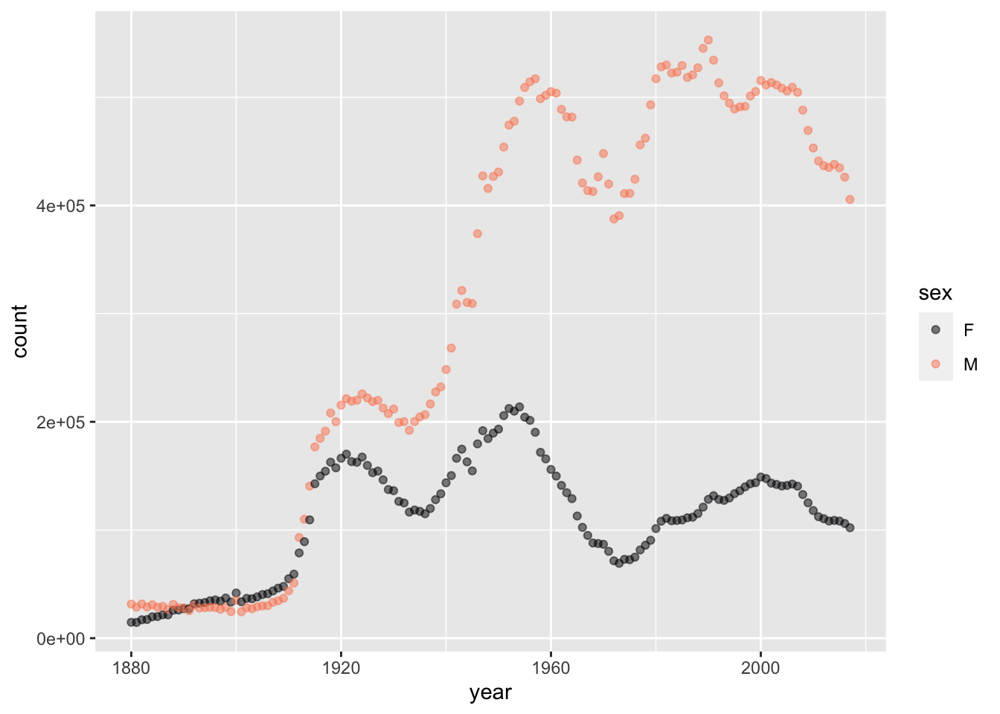
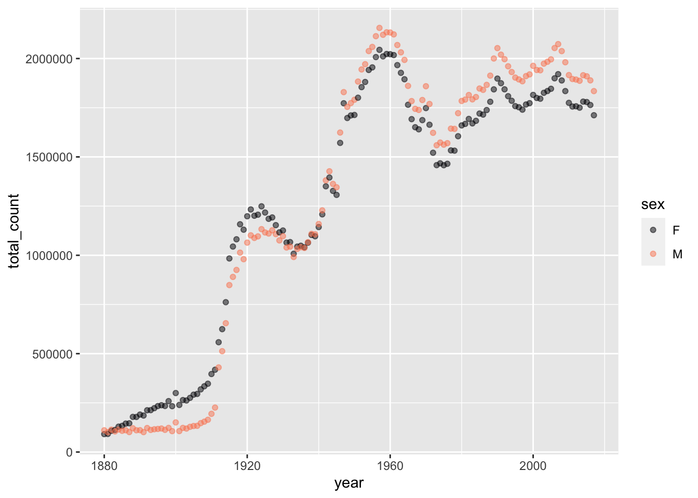
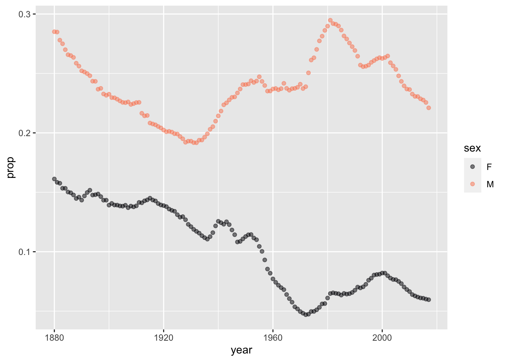

| grade | sessionID | sid |
|---|---|---|
| A | session2606 | S31440 |
| S | session2491 | S31461 |
| A | session1904 | S31461 |
| A | session2606 | S31869 |
| A | session2044 | S31905 |
| A | session2491 | S32028 |
| A- | session3524 | S32328 |
| A | session2044 | S32328 |
7 Databases
As we move forward through these Lessons, an individual data frame will be the launching point for a statistical analysis or a graphical or tabular presentation. Inside every data frame, as you know, each row (that is, specimen) is an instance of the same unit of observation. But data science work often involves combining information about different kinds of unit of observation. For example, a health-care research project will presumably be based on patients: the corresponding data frame has a patient as the unit of observation and will include variables on date of birth, gender, and so on. If the project involves looking at doctor and clinic visits, there will be another data frame in which the unit of observation is a doctor/clinic. If medication is part of the project, there will be a data frame listing each patient’s prescriptions and another data frame giving the characteristics of each drug substance. In the prescription data frame, there will be many rows that list the same drug, each such row rendered unique by the patient involved and the date of the prescription. Interested in studying the health consequences of previous illnesses? Then still another data frame will be needed to list each person’s medical history, where the unit of observation is a bout of illness in an individual patient.
Suppose the project is to identify illnesses that might be side-effects of drugs. To evaluate a specific hypothesized drug-to-illness path, a basic question is whether those who took the drug are more likely to subsequently suffer the illness than the people who did not take the drug.
The data frame needed to answer this question might be simple: the unit of observation is a patient. The core variables will be (1) whether and when the patient got the illness and (2) whether and when the patient took the drug. As you will see in later Lessons, we can include in the analysis characteristics of each patient so that we can avoid, for instance, comparing elderly drug takers to young adults who never had the drug. This will entail including additional variables to the data frame, but the unit of observation will remain “a patient.”
How do we construct the data frame described in the previous paragraph. We will need to combine the illness data frame, the drug prescription data frame, the drug-substance data frame (to connect together drugs that belong to the same class of substances), and the patient data frame.
This Lesson is about how to combine data frames with different units of observation, and how to organize those multiple data frames so that they can easily be combined. The set of well-organized data frames is called a database.
Facility in using databases is a core professional skill for data scientists. For the statistical thinker, it is important to know the basics of how databases work so that she can call on data from multiple sources to inform the statistical questions asked.
E pluribus unum
The traditional national motto of the United States is E pluribus unum: “out of many, one.” The motto is embossed on coinage and printed on paper currency. It refers to the formation of a single country out of the thirteen original colonies. The historically-minded reader knows that the process of creating one country out of many colonies was difficult. On the political side, representatives from each of the thirteen met together in one body to debate, decide, and reconcile their differences.
With databases, the process—combining multiple data frames into a single one suited for statistical analysis—is much simpler. One reason is that there is no need for all the multiple data frames to meet all together simultaneously. Any combination of data frames can be constructed by a series of steps, each of which involves combining only two data frames at a time.
A phrase from the Declaration of Independence describes this simultaneous as “in General Congress, Assembled.”
This Lesson introduces the generic process of combining two data frames with different units of observation. The Lesson also illustrates how to organize systems of data frames so that they can easily be combined into the myriad of forms needed to address the myriad of potential scientific and statistical questions.
Join: putting tables together
To illustrate wrangling to join tables, we’ll work with an authentic database in a familiar setting: student transcripts at a college. At many colleges, the person with authority over the database is called the “registrar.” The registrar at one college gave permission to make parts of the database available to the general public so long as the published data is de-identified. This means, for example, that arbitrary codes are used for the names of students, faculty, and departments.
There are three data frames in the (simplifed) database: Grades, Sessions and Gradepoint.
Here are a few randomly selected rows from the three data frames:
Grades
sid is the student ID, while sessionID identifies which course (in which semester) the student took. Students take multiple courses. For instance, student S32328 took sessions 2044, 2491, and 3524 (among others not listed). Student S31461 is listed twice, once for session 2491 and again for 1904. These two students had one course in common, session 2491. They may have sat next to each other! The same is true in session 2606 for students S31440 and S31869.
: : : : : : : : : : : : : : : : : :
Sessions
| sessionID | iid | enroll | dept | level | sem |
|---|---|---|---|---|---|
| session2044 | inst436 | 16 | m | 100 | FA2001 |
| session2491 | inst170 | 34 | n | 200 | FA2002 |
| session2606 | inst143 | 25 | C | 300 | SP2003 |
| session1904 | inst264 | 26 | M | 100 | SP2001 |
| session3524 | inst436 | 21 | g | 100 | FA2004 |
| session2911 | inst268 | 10 | M | 300 | FA2003 |
| session3822 | inst465 | 25 | k | 200 | SP2005 |
Each session is taught by an instructor (iid), is associated with a department (dept). The number of students in that session (enroll) is listed, as is the semester in which the session was offered. The level indicates whether the course is directed to new students (level 100) or more advanced students (levels 200 and 300).
: : : : : : : : : : : : : : : : : :
Gradepoint
| grade | gradepoint |
|---|---|
| AU | NA |
| S | NA |
| A | 4.00 |
| A- | 3.66 |
| B+ | 3.33 |
| B | 3.00 |
| B- | 2.66 |
| C+ | 2.33 |
| C | 2.00 |
| C- | 1.66 |
| D+ | 1.33 |
| D | 1.00 |
| D- | 0.66 |
| NC | 0.00 |
Gradepoint establishes the college’s policy in converting letter grades to numbers. An A is translated to 4 gradepoints whichNC (no credit) gets zero gradepoints. Pass-fail students who pass (S) don’t have the course included in their gradepoint average. Similarly for students who are auditing (AU) the course.
Consider the familiar student-by-student gradepoint average (GPA). This averages together each student’s grades. The Grades tables store the grades, but we can’t average categorical levels like “B+” or “C”. To average, we need to convert each category to a number. This is done via the Gradepoint table.
The operation is conceptually simple. Add a new column to Grades that has the number. Work row-by-row through Grades, referring to the policy in Gradepoint to fill in the value of the new column for that row. Simple, but tedious!
The left_join() wrangling operation involves the two data frames to be combined. For each row in the “left” data frame, the corresponding information from the “right” data frame is added. Like this:
Notice that student S31461 took session 2491 as a pass/fail class. He or she (we don’t know which, because we don’t have permission to publish the table giving such information for individual students) passed the course with a grade of S which doesn’t count for student’s gradepoint.
Grades |> left_join(Gradepoint) Joining with `by = join_by(grade)`| grade | sessionID | sid | gradepoint |
|---|---|---|---|
| A- | session3524 | S32328 | 3.66 |
| A | session2044 | S32328 | 4.00 |
| A | session2491 | S32028 | 4.00 |
| A | session2606 | S31869 | 4.00 |
| S | session2491 | S31461 | NA |
| A | session1904 | S31461 | 4.00 |
| A | session2606 | S31440 | 4.00 |
| A | session2044 | S31905 | 4.00 |
| A | session3524 | S31548 | 4.00 |
| A | session2606 | S32109 | 4.00 |
| A | session2044 | S31620 | 4.00 |
| A | session2044 | S31458 | 4.00 |
| A- | session2044 | S32205 | 3.66 |
| A- | session3524 | S32322 | 3.66 |
| A- | session3524 | S31506 | 3.66 |
| A- | session2044 | S32352 | 3.66 |
| A- | session2491 | S31827 | 3.66 |
| A- | session3524 | S31914 | 3.66 |
| A- | session2044 | S31914 | 3.66 |
| A- | session2491 | S31953 | 3.66 |
| A- | session3524 | S32373 | 3.66 |
| A- | session2491 | S31419 | 3.66 |
| A- | session3524 | S32406 | 3.66 |
| B | session3524 | S31197 | 3.00 |
| B | session2911 | S32418 | 3.00 |
| B- | session2911 | S32250 | 2.66 |
| B+ | session3524 | S31833 | 3.33 |
| B+ | session2044 | S32049 | 3.33 |
| B+ | session3524 | S32025 | 3.33 |
| C | session1904 | S31194 | 2.00 |
| S | session2491 | S31791 | NA |
| S | session3822 | S31647 | NA |
Once Gradepoint has been joined to Grades, we can compute the GPA summary for each of the 443 students:.
Grades |>
left_join(Gradepoint) |>
summarize(GPA = mean(gradepoint, na.rm = TRUE), .by = sid)In calculating the mean gradepoint, we’ve set
na.rm = TRUE meaning to remove any NA values before computing the mean. To judge from the GPA, student S31461 strategically decided to preserve their high GPA by taking a risky course pass/fail.| sid | GPA |
|---|---|
| S31461 | 3.94 |
| S31869 | 3.56 |
| S31440 | 3.76 |
| S32328 | 3.52 |
| S32028 | 3.55 |
| S31905 | 3.88 |
::: {.callout-note} ## Case study: What about the instructor? Students will be sympathetic to the claim that some instructors are harder grading than others. This makes a student-by-student GPA an unreliable indicator of a student’s performance.
Knowing how easy it is to join data frames … Let’s try something different. We can calculate a gradepoint average for each instructor! This will involve joining the Grades and Sessions data frames in order to place the instructor’s ID next to each of the grades he or she gave out. Join this combined table with Gradepoint to get the numerical value of the grade, then average across instructors. We will also keep track of how many students were taught by the instructor.
Instructors <- Grades |>
left_join(Sessions) |>
left_join(Gradepoint) |>
summarize(iGPA = mean(gradepoint, na.rm = TRUE,
nstudents = sum(enroll, na.rm = TRUE)), .by = iid)
Instructors| iid | iGPA |
|---|---|
| inst143 | 3.76 |
| inst198 | 2.99 |
| inst263 | 2.85 |
| inst501 | 3.85 |
| inst269 | 2.72 |
| inst411 | 3.01 |
| inst459 | 3.74 |
| inst419 | 2.95 |
Exercises
Exercise 7.1 Q07-101
{{< include ../LSTexercises/07-Databases/Q07-101.Rmd>}}
Exercise 7.2 Q07-102
{{< include ../LSTexercises/07-Databases/Q07-102.Rmd>}}
Exercise 7.3 Q07-103
{{< include ../LSTexercises/07-Databases/Q07-103.Rmd>}}
Exercise 7.4 Q07-104
{{< include ../LSTexercises/07-Databases/Q07-104.Rmd>}}
Exercise 7.5 Q07-105
{{< include ../LSTexercises/07-Databases/Q07-105.Rmd>}}
Exercise 7.6 DC10-3B
Refer to the three differently formatted data frames in Exercise 5.11.
Suppose you have another data frame, ContinentData, which gives the continent that each country is in.
ContinentData
| Country | Continent |
|---|---|
| Algeria | Africa |
| Brazil | South America |
| Columbia | South America |
Which data-frame format from Exercise 5.11 do you think would make it easiest to find the sum of the values for each continent for each of the years? How would you do it?
Answer:
Format C.
Format_C |> left_join(ContinentData) |>
summarize(total = sum(value), .by = c(Continent, Year))
Exercise 7.7 cat-bend-chair
Consider an analysis of babynames::babynames aimed at looking at the popularity over time of giving babies names from the Bible. How can we know which names in babynames::babynames come from the Bible? By joining the data frame with another listing bible names. Here’s how to access such a data frame:
BibleNames <-
readr::read_csv("https://mdbeckman.github.io/dcSupplement/data/BibleNames.csv") |>
filter(!duplicated(name))The kind of join that we want is called right_join(). This keeps only those rows in the piped-in data frame that correspond to a row in the data frame named in the parentheses, that is:
In_bible <-
babynames::babynames |>
right_join(BibleNames, by = c("name"))Caution: Note that the argument name in right_join() is by = rather than .by = as in other data wrangling verbs.
- Wrangle
In_bibleto calculate the total number of biblically-named babies for each year for eachsex. Graph the number versus year using color to representsex.
ANSWER
Total_biblical <- In_bible |>
summarize(count = sum(n), .by = c(year, sex))
Total_biblical |> point_plot(count ~ year + sex)
END OF ANSWER
Certainly the count of babies with each name is a possible measure of popularity. Perhaps a better measure is the proportion of babies with such names. This takes into account the overall birth rate in each year.
- Create a data frame
All_birthsthat wranglesbabynames::babynamesto give the total number of babies in each year. Plot this total number versus year, usingsexto represent color.
ANSWER
All_births <- babynames::babynames |>
summarize(total_count = sum(n), .by = c(year, sex))
All_births |> point_plot(total_count ~ year + sex)
End of answer
- Use
left_join()to join the tables you created in (1) and (2). From the joined table, calculate for each year and sex the proportion of all babies who have biblical names. Then plot this proportion versusyear, again using color forsex.
ANSWER
Total_biblical |>
left_join(All_births, by=c("sex", "year")) |>
mutate(prop = count / total_count) |>
point_plot(prop ~ year + sex)
end of ANSWER
- Starting again with the
In_bibledata frame, find the total number of births (combining all the years) for each name for each sex. Display the 10 female and male names that have the highest count.
ANSWER
By_name <- In_bible |>
summarize(count = sum(n), .by = c(name, sex))
By_name |>
filter(sex == "F") |>
arrange(desc(count)) |>
head(10)| name | sex | count |
|---|---|---|
| Mary | F | 4123200 |
| Sarah | F | 1073895 |
| Anna | F | 888505 |
| Ruth | F | 823577 |
| Deborah | F | 740362 |
| Sharon | F | 721410 |
| Rachel | F | 562969 |
| Martha | F | 548387 |
| Julia | F | 455999 |
| Judith | F | 452151 |
By_name |>
filter(sex == "M") |>
arrange(desc(count)) |>
head(10)| name | sex | count |
|---|---|---|
| James | M | 5150472 |
| John | M | 5115466 |
| David | M | 3611329 |
| Joseph | M | 2603445 |
| Thomas | M | 2304948 |
| Daniel | M | 1907357 |
| Paul | M | 1386815 |
| Mark | M | 1349865 |
| Andrew | M | 1283910 |
| Joshua | M | 1202454 |
end of ANSWER
Exercise 7.8 fish-drink-fridge
Consider these two tables containing demographic and geographic information about countries.
| country | pop | area |
|---|---|---|
| Afghanistan | 31822848 | 652230 |
| Akrotiri | 15700 | 123 |
| Albania | 3020209 | 28748 |
| Algeria | 38813722 | 2381741 |
| American Samoa | 54517 | 199 |
| name | iso_a3 | long | lat |
|---|---|---|---|
| Afghanistan | AFG | 66.168500 | 33.78231 |
| Aland | ALA | 19.967041 | 60.19722 |
| Albania | ALB | 20.259880 | 41.14326 |
| Algeria | DZA | 2.828547 | 28.14225 |
Explain why the information in the two tables cannot be successfully combined by laying the two tables side by side into a single table, that is, by simply copying the long and lat variables from one table and pasting them alongside the country, pop and area variables in the other table.
Answer:
Not all the cases in the demographics table are contained in the geographic table, and there are cases in the geographic table that are not in the demographic table. For instance, Åland is in the geographic table but not in demographics. Akrotiri is in the demographics but not in the geographic table. You wouldn’t want to combine the location of Åland with the demographics of Akrotiri!
One of the purposes of the join family of data verbs is to handle such missing or extra cases in the tables being combined.
Draft exercises
Exercise 7.9 Q07-106
{{< include ../LSTexercises/07-Databases/Q07-106.Rmd>}}
Exercise 7.10 Q07-107
{{< include ../LSTexercises/07-Databases/Q07-107.Rmd>}}
Exercise 7.11 Q07-108
{{< include ../LSTexercises/07-Databases/Q07-108.Rmd>}}